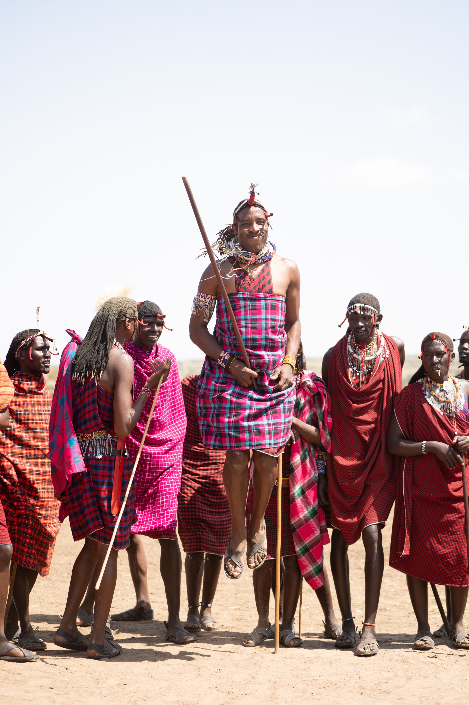

🗣️
Mtumiaji anaongea
Anaandika au kuzungumza kwa lugha anayochagua.
LocalLang Tanzania AI inaleta tafsiri, mazungumzo, sauti na teknolojia ya lugha karibu na jamii za Tanzania.

Jinsi inavyofanya kazi
Mfumo hupokea ujumbe, hutambua lugha na muktadha, huchakata taarifa, kisha hutoa jibu linaloeleweka.
Anaandika au kuzungumza kwa lugha anayochagua.
NLP hutambua maneno, muktadha na mahitaji ya mazungumzo.
Lugha ya chanzo huunganishwa na lugha lengwa.
Mtumiaji hupata jibu kwa lugha na muktadha unaofaa.
Professionals & real life
Mifano ya mawasiliano yanayoweza kubadilika kulingana na mazingira ya mtumiaji.
Vipengele
Muundo wa kuanzia kwa translation, voice, conversation, language data na API.
Chagua lugha za Tanzania na uendelee kupanua mfumo.
Andika, ongea, sikiliza na jenga uzoefu wa mawasiliano wa asili.
Afya, elimu, jamii na mazungumzo ya kawaida vinaweza kutenganishwa.
Inaweza kuunganishwa na FastAPI, database na language model.
Msamiati, sentensi, tafsiri na metadata vinaweza kukusanywa.
Muundo unaweza kuongezewa authentication, roles na ruhusa za API.
Lengo la mradi
Kupunguza kikwazo cha lugha katika afya, elimu, huduma za jamii, biashara, utafiti na uhifadhi wa lugha.
Mawasiliano bora kati ya mgonjwa na mhudumu.
Maarifa yanayofikika kwa lugha mbalimbali.
Kulinda maneno, sauti na maarifa ya jamii.
API na data kwa waendelezaji wa kizazi kijacho.